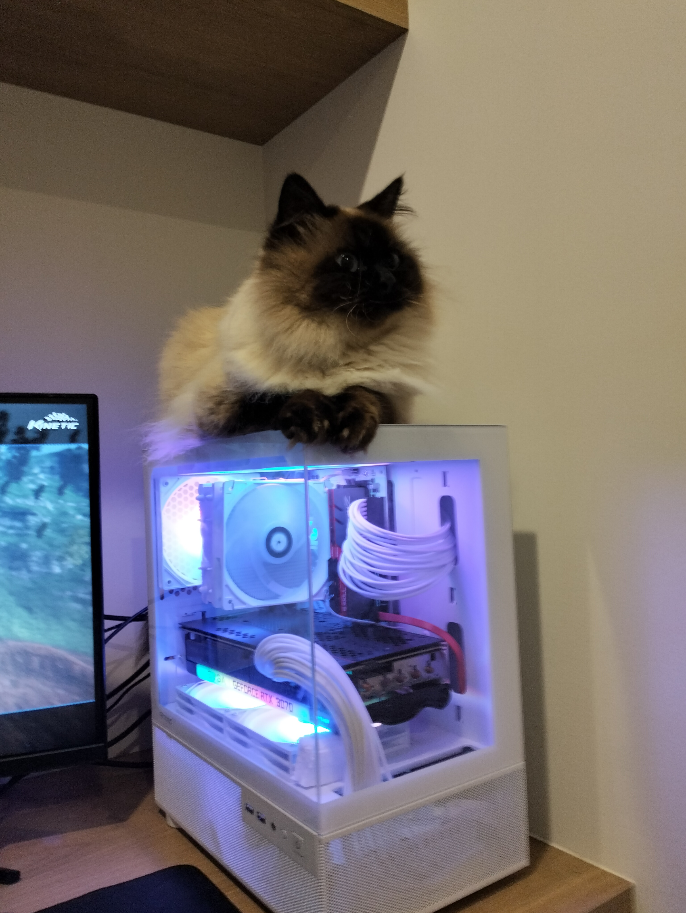
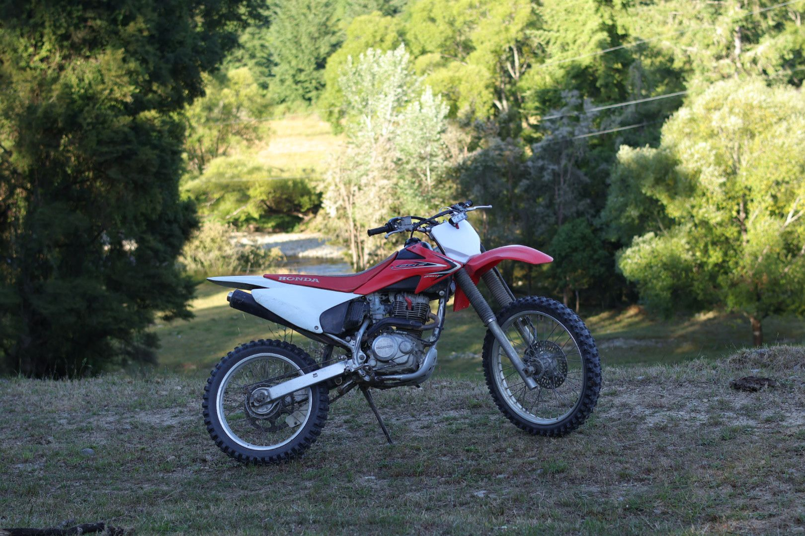

Gaming
In my spare time, I enjoy fast-paced strategic shooters like Counter-Strike 2 as well as racing titles like Forza 6.

Music
I play bass and electric guitar. I won Most Outstanding Bassist at the Southern Jam Youth Jazz Festival, and play in a band representing MGS regionally.

Dirtbikes
I’ve been riding dirtbikes since I was four. I love riding track and trail routes around the Waimakariri River.